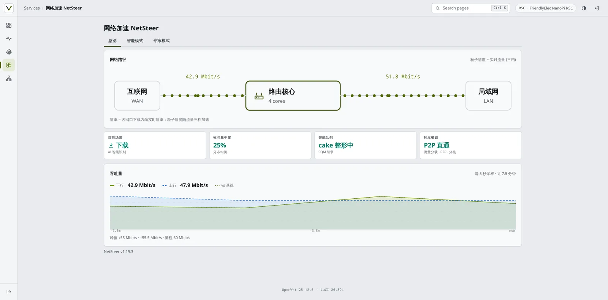

OpenWrt · LuCI app
NetSteer
Network acceleration for OpenWrt routers. Queue shaping, multi‑core load spreading and P2P passthrough behind one switch — with an A/B benchmark that measures the gain on your own hardware.
- throughput, 20 parallel downloads
- +17%
- latency, measured on‑device
- 5.7 → 5.2 ms
- GitHub stars · MIT
- 13
